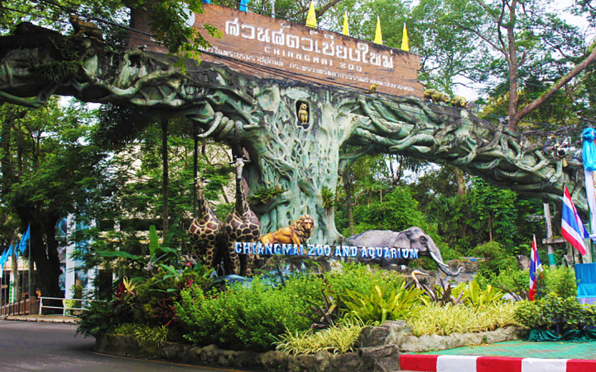
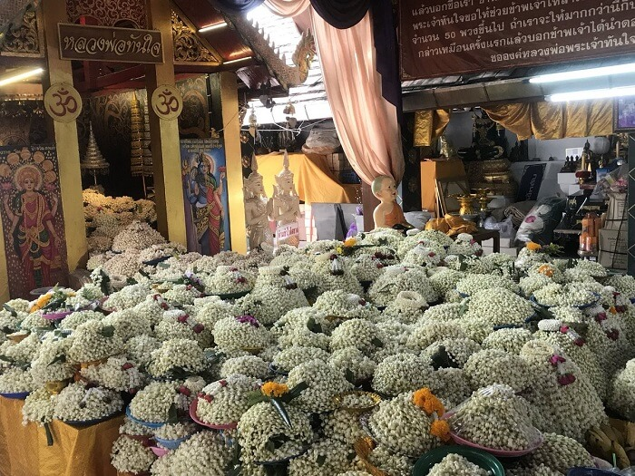
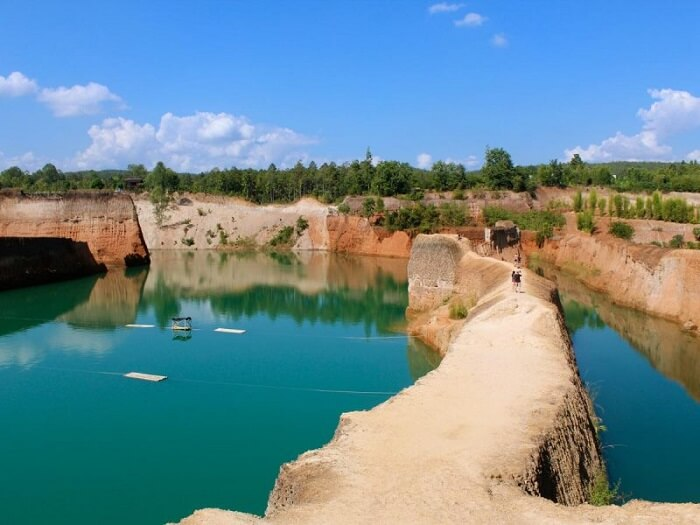
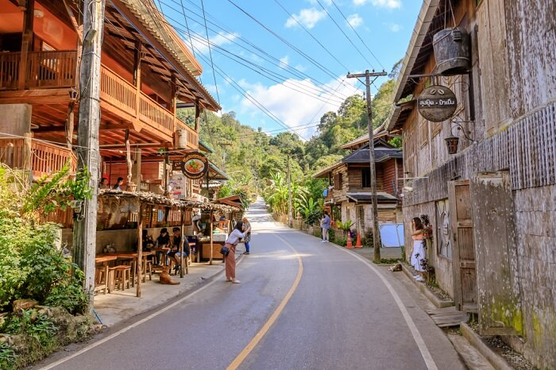
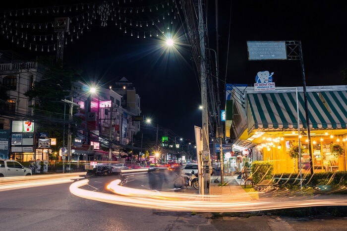
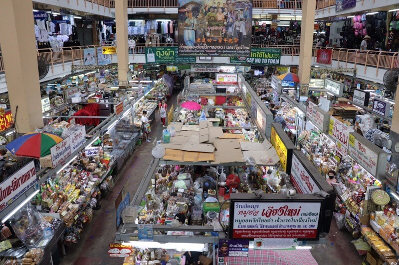

Traveloke
Home
About
Contact
Search

สวนสัตว์เชียงใหม่
ตั้งอยู่ใกล้กับสวนรุกขชาติห้วยแก้ว ภายในสวนสัตว์มีสัตว์นานาชนิด เช่น แพนด้า สุดน่ารักนั่นเอง แพนด้าน่ารักเหล่านี้ เดินทางมาไกลจากจีน และยังถือว่าเป็นทูตสันถวไมตรีระหว่าง 2 ประเทศอีกด้วย
ที่อยู่ : 100 ถนนศรีวิชัย ตำบลสุเทพ อำเภอเมือง จังหวัดเชียงใหม่
ดอยสุเทพ
วัดพระธาตุดอยสุเทพตั้งอยู่บนยอดดอยสุเทพ เป็นวัดคู่บ้านคู่เมืองของชาวเชียงใหม่ที่ต้องแวะไปสักการะให้ได้เมื่อมาเยือนเชียงใหม่นะคะ โดยเราจะได้นมัสการพระบรมสารีริกธาตุของพระพุทธเจ้าเพื่อสิริมงคลแก่ชีวิต
ที่อยู่ : ถ.ศรีวิชัย ต.สุเทพ อ.เมือง จ.เชียงใหม่ 50200

วัดพระธาตุดอยคำ
วัดพระธาตุดอยคำ แต่เดิมชื่อ วัดสุวรรณบรรพต เป็นวัดที่มีชื่อเสียงด้านการขอพร บนบาน และเป็นวัดที่สำคัญของจังหวัดเชียงใหม่ อายุเก่าแก่กว่า 1,300 ปี บนวัดพระธาตุดอยคำ มีจุดชมวิว ที่สามารถมองเห็นวิวทิวทัศน์รอบเมืองเชียงใหม่
ที่อยู่ : 108 หมู่ 3 ตำบลแม่เหียะ อำเภอเมือง จังหวัดเชียงใหม่
ดอยหลวงเชียงดาว
ดอยหลวงเชียงดาว ที่นี่ขึ้นชื่อเรื่องความสวยงามและอุดมสมบูรณ์ของธรรมชาติ สูงเป็นอันดับ 3 ของประเทศเลยค่ะ คือ 2,275 เมตร จากระดับน้ำทะเล สูงและสวยมากๆ จนทำให้ใครๆ ก็อยากขึ้นไปสัมผัสความงดงามของธรรมชาติ
ที่อยู่ : 273 หมู่ 5 ตำบลเชียงดาว อำเภอเชียงดาว จังหวัดเชียงใหม่

แกรนด์แคนยอน หางดง
แกรนด์แคนยอน เชียงใหม่ ที่ อ.หางดง จริงๆ แล้วที่ตรงนี้เคยเป็นบ่อดินที่เจ้าของขุดดินไปขาย เมื่อบ่อเหล่านี้กลายเป็นบ่อน้ำทำให้เกิดความสวยงามคล้ายแกรนด์แคนยอน กลายเป็นแหล่งท่องเที่ยวแห่งใหม่ สวนน้ำที่ใครไปเที่ยวเชียงใหม่ก็ต้องไม่พลาด
ที่อยู่ : 202 หมู่ 3 ถนนเลียบคลองชลประทาน ตำบลน้ำแพร่ อำเภอหางดง จังหวัดเชียงใหม่

บ้านแม่กำปอง
บ้านแม่กำปอง หนึ่งในที่สุดของความสโลว์ไลฟ์ หมู่บ้านเล็กๆ ในหุบเขาที่เงียบสงบ ทำให้ใครๆ ก็หลงใหล และเดินทางมาใช้ชีวิตแบบช้าที่หมู่บ้านแห่งนี้ ที่บ้านแม่กำปองจะเป็นชุมชนเล็กๆ ที่เต็มไปด้วยธรรมชาติ
ที่อยู่ : ตำบลห้วยแก้ว อำเภอแม่ออน จังหวัดเชียงใหม่

ถนนนิมมานเหมินทร์
นิมมานเหมินทร์ พูดชื่อถนนเส้นนี้คงไม่มีใครไม่รู้จักใช่มั้ยคะ ก็เพราะเป็นถนนชื่อดังของเชียงใหม่ แหล่งรวมร้านค้า ร้านอาหารหลากหลายสไตล์ รวมไปถึงคาเฟ่เก๋ๆ
ที่อยู่ : ถนนนิมมานเหมินทร์ ตำบลสุเทพ อำเภอเมือง จังหวัดเชียงใหม่

กาดหลวง หรือ ตลาดวโรรส
ของกินเชียงใหม่ขึ้นชื่อเรื่องความอร่อยอยู่แล้วค่ะ ใครไปเชียงใหม่ก็ต้องกินอาหารพื้นเมือง แล้วจะไปซื้ออาหารพื้นเมืองอร่อยๆ ก็ต้องไปซื้อที่ที่นี่เลย กาดหลวง หรือ ตลาดวโรรส ซึ่งภายในตลาดมีร้านขายอาหารพื้นเมือ
ที่อยู่ : ถนนวิชยานนท์ ตำบลช้างม่อย อำเภอเมือง จังหวัดเชียงใหม่